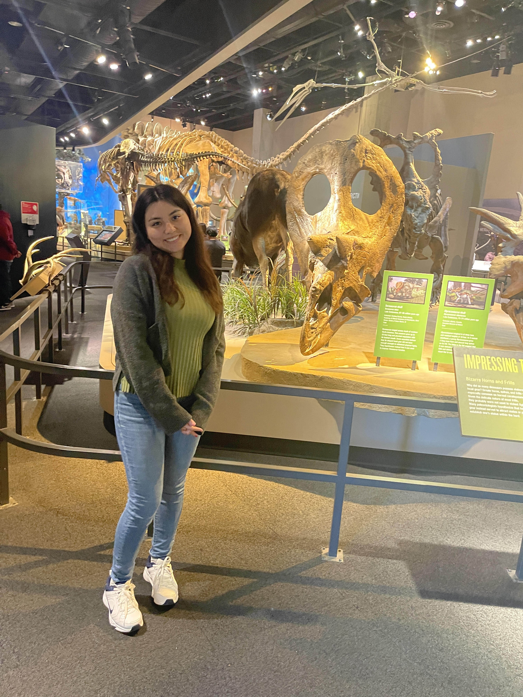

I am a proud first-generation Latina in my senior year of Computer Engineering. My journey has been shaped by resilience, curiosity, and a deep commitment to breaking barriers. As I approach graduation, I'm excited to share more about myself, my experiences, and the passions that drive me both inside and outside of technology.
Interactive Technical Stack
Click on any icon to learn more about the technology:
Why I'm a Great Fit for Your Team
I believe that code is written for people first, then for machines. This philosophy drives me to focus on clear, maintainable code and crystal-clear communication. I thrive in collaborative environments where I can mentor peers and contribute to a positive, growth-focused culture.
Beyond the Screen: My World, My Passions
While coding fuels my mind, life's richer experiences truly nourish my soul. Here’s a peek into what makes me, me!
My Culinary Adventures 🍔
Food isn't just sustenance; it's an exploration! Here are a few of my absolute favorites:

McDonald's: The Ultimate Comfort Stop
Don't judge a book by its golden arches! My go-to is the McChicken sandwich. There’s something about that crispy patty, fresh lettuce, and just-right mayo on a toasted bun. It’s a classic for a reason—a quick, satisfying treat whenever you need it most!
Find Nearby Restaurants
Ramen: A Bowl of Pure Joy
There’s something irresistibly comforting about a steaming bowl of Ramen. The rich, savory tonkotsu broth warms you from the inside out, while the springy noodles, tender chashu pork, and velvety soft-boiled egg create a harmony of textures and flavors. Every bite is a small, delicious escape—pure comfort in a bowl.
Find Nearby Restaurants
Sushi: Art on a Plate
Whenever I’m in the mood for something fresh and beautifully crafted, sushi is always my go-to. The perfect harmony of seasoned rice, fresh fish, and just the right hint of wasabi and soy sauce feels like pure bliss. Every bite is not just food, but an experience that awakens the taste buds and soothes the soul.
Find Nearby RestaurantsMy Hobbies & Creative Outlets
I really love digging into a bunch of passions beyond coding! Here are some of the things that keep me busy and inspired:
- Gaming: Call of Duty, Apex Legends, Minecraft — building, competing, and having fun online.
- Custom Keyboard & Gaming Rig Design: Obsessed with tactile switches and optimizing every detail for the perfect setup.
- Gardening: Growing plants and experimenting with green spaces around my home.
- Drawing: Bringing my favorite characters and creative ideas to life on paper.
- Anime & Movies: Watching anime series and films of all kinds I personaly really enjoy Naruto.
- Cooking: I really enjoy my time cooking and exploring new recipies